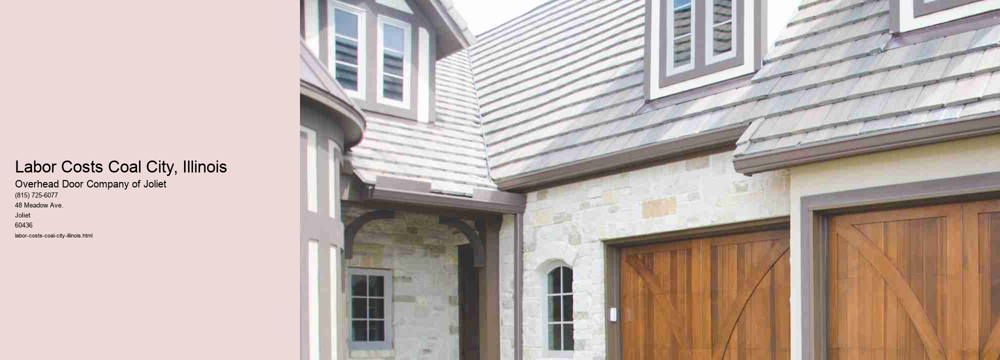

Labor costs in Coal City, Illinois, serve as a microcosm of broader economic trends affecting small-town America. Nestled in Grundy County, Coal City is emblematic of many small towns that have historically been reliant on industries such as coal mining, manufacturing, and agriculture.
In recent years, labor costs in Coal City have been impacted by a confluence of factors, including shifts in the local economy, changes in industry standards, and broader national trends.
The shift from a predominantly mining-based economy to a more diversified one has meant that new industries, such as logistics and manufacturing, are becoming more prominent in Coal City. These industries often require a different skill set, leading to an increased demand for skilled labor. Consequently, there has been a gradual rise in labor costs as employers compete to attract and retain workers with the necessary expertise. Furthermore, the introduction of technology and automation in these sectors has amplified the need for a workforce that is not only skilled but also adaptable to technological advancements.
Another critical factor influencing labor costs in Coal City is the national trend towards higher minimum wages and improved labor standards. As policymakers push for better wages and working conditions across the country, small towns like Coal City are not immune to these changes. Employers are compelled to adjust their pay structures to comply with new regulations, which can lead to increased operational costs. This dynamic is particularly challenging for small businesses that operate on thin margins and may struggle to absorb the added expenses.
Moreover, the cost of living in Illinois, albeit lower than in many urban areas, still presents challenges for residents of Coal City. Rising housing costs, healthcare expenses, and education fees necessitate wages that can sustain a reasonable standard of living. As a result, there is ongoing pressure on employers to offer competitive wages that not only attract talent but also meet the basic needs of their employees.
In conclusion, labor costs in Coal City, Illinois, are shaped by a complex interplay of local and national factors.
Cost Factors Coal City, Illinois